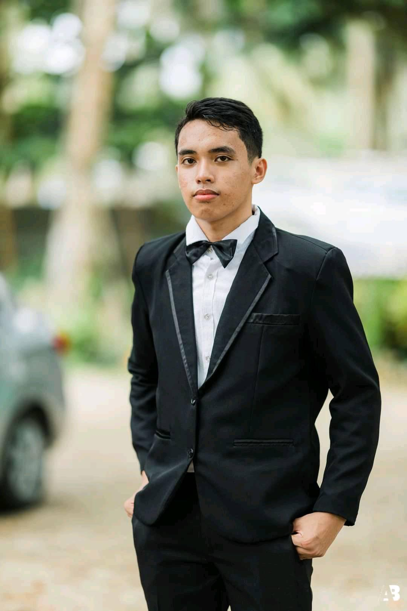

About me
I am a beginner freelancer based in Marihatag, Philippines, with skills in HTML, CSS, Canva, Premiere Pro, and basic web development. I am passionate about helping clients create simple and professional online solutions. I am detail-oriented, reliable, and always eager to learn new tools to deliver quality work on time.
- Based in
- Marihatag, Philippines
- Focus
- Web design, video editing, virtual assistance
- Tools
- HTML, CSS, Canva, Premiere Pro